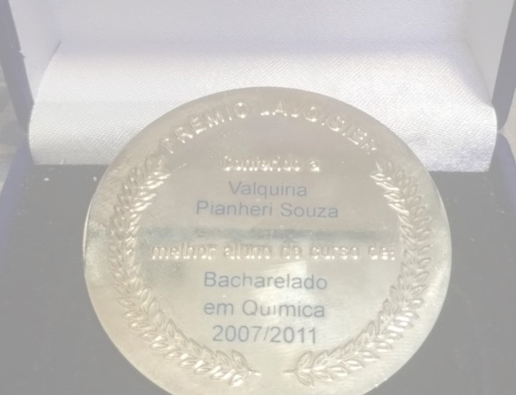
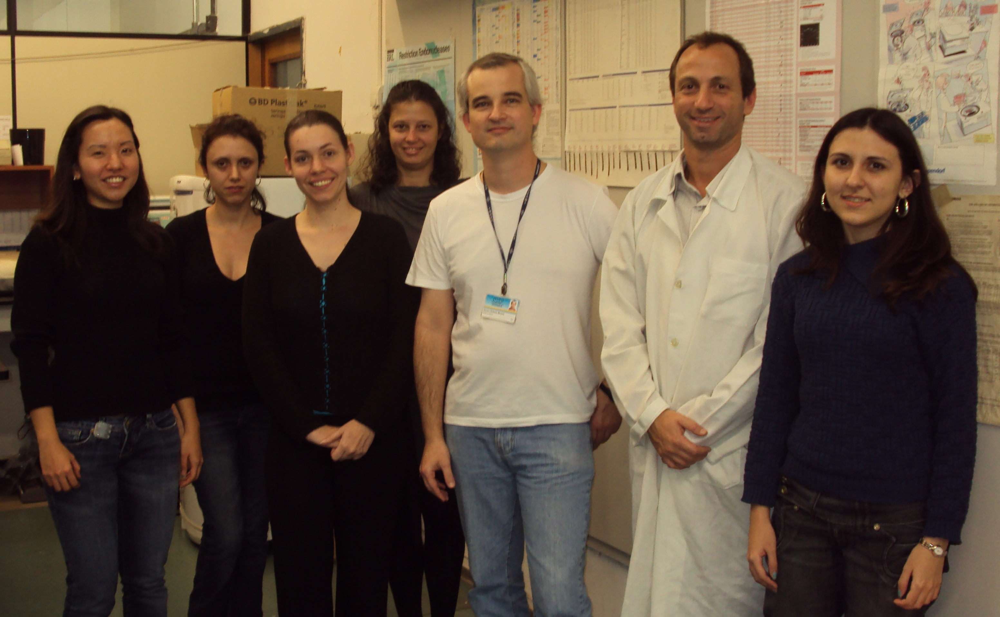
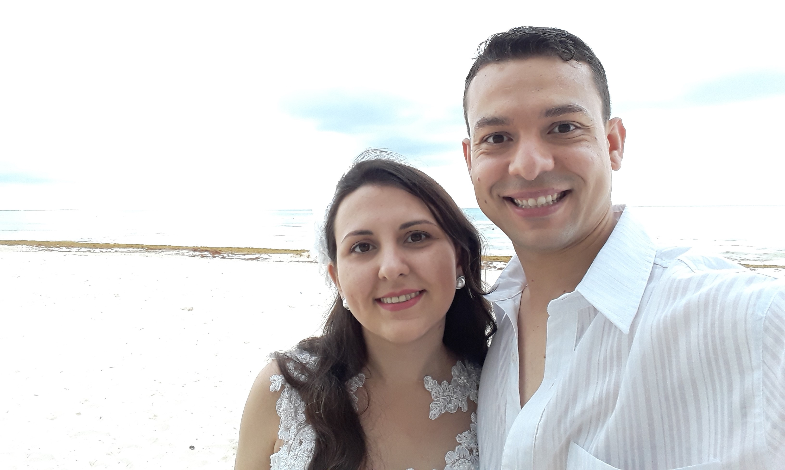
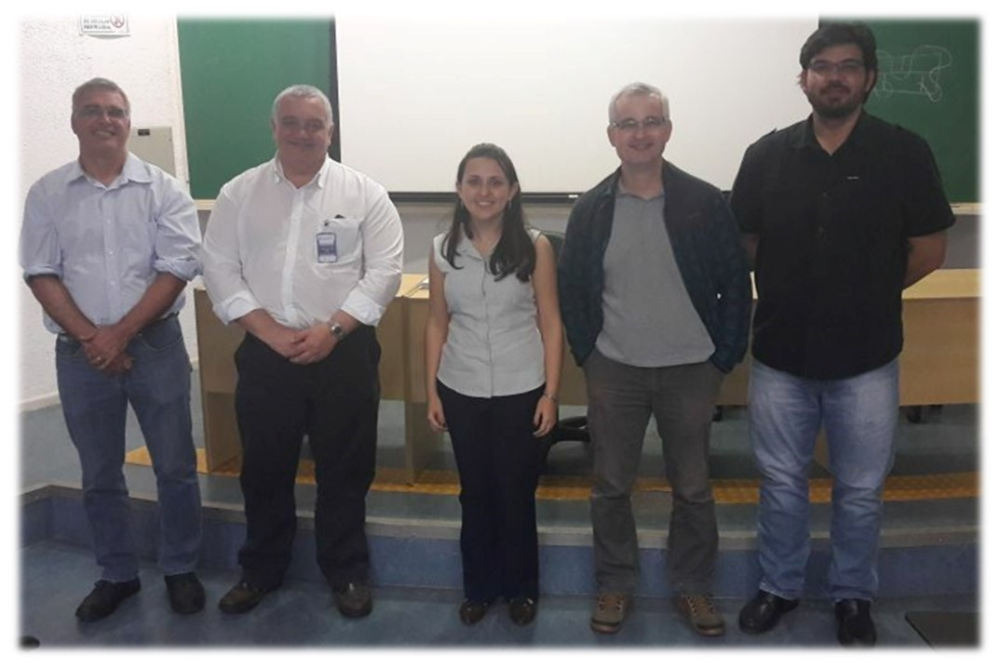
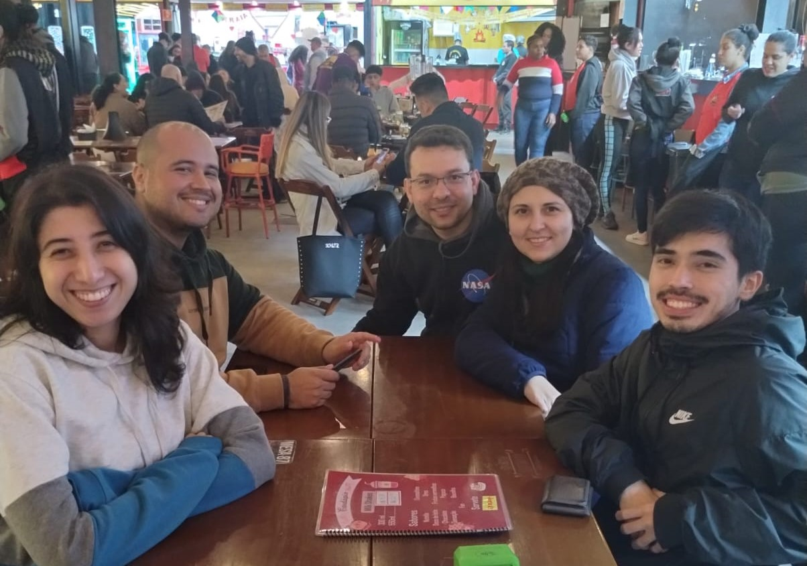

Valquiria Pianheri
Programadora e professoraSobre mim:
- Sou desenvolvedora front-end, professora de Química/STEM e estudante de Tecnologia da Informação no último período da faculdade.
- Gosto de resolver desafios, onde já consegui resolver um desafio de programação da Sigma Geek nível 1.
- Tenho doutorado em Bioquímica, e neste período trabalhei usando vários conceitos de bioinformática e análise de dados.
- Em minha trajetória, desenvolvi diversas habilidades, como trabalhar em equipe e comunicação.
Minha trajetória:
-
2011 - Formatura em Química pela USPConclui a graduação em Química pela USP (prêmio de melhor aluno do bacharelado). Ingressei no Doutorado Direto em Bioquímica (1ªcolocada).
 -
2015/2016 - Divulgação internacionalParticipei de congressos internacionais e publiquei artigos. 
-
2017/1sem - CasamentoCasei um pouco antes de defender a tese. Iniciou uma nova fase de vida, de muito apoio e cumplicidade. 
-
2017/2sem - Defesa de doutoradoDefendi a minha tese de doutorado. Encerrou um ciclo de muito aprendizado. 
-
2018 - Início da docênciaComecei a dar aulas no Instituto Federal de São Paulo / Suzano, e posteriormente em outras instituições.

-
2019 - Novos horizontesNeste período, trabalhei no cursinho Objetivo Guarulhos, e além de dar aulas participei da divulgação, gerando conteúdo e inserindo no site feito em WordPress com Elementor.
-
2021/1sem - 1º curso de ProgramaçãoFiz o curso de Introdução à programação em linguagem C, pelo IME-USP. Lá percebi que gostava muito de programar e comecei a estudar mais sobre a área.
-
2021/2sem - Início da graduação em TIComecei o meu curso de graduação de Bacharelado em Tecnologia da Informação pela UNIVESP. 
-
Hoje - Desenvolvedora e estudanteAtualmente, desenvolvo alguns pequenos projetos, faço cursos e estou finalizando a minha graduação. Além disso, continuo atuando como professora, de química e de STEM.
Formação e cursos:
BACHARELADO EM TECNOLOGIA DA INFORMAÇÃO
INSTITUIÇÃO: UNIVESP
PERÍODO: Ago/2021 - Atual (previsão: jul/2024)
Curso muito importante em minha carreira de tecnologia. Nele comecei a compreender os principais conceitos e bases da computação. Aprendi diversas áreas e desenvolvi projetos com clientes reais.
DOUTORADO EM CIÊNCIAS (BIOQUÍMICA)
INSTITUIÇÃO: IQ-USP
PERÍODO: Ago/2011 - Set/2017
No doutorado, aprendi diversas "softskills", como comunicação, trabalho em equipe e ter visão crítica. Trabalhei também com análise de dados, modelagem e bioinformática.
BACHARELADO EM QUÍMICA
INSTITUIÇÃO: IQ-USP
PERÍODO: Fev/2007 - Jul/2011
Minha primeira graduação, onde aprendi muito não só sobre química, mas sobre estudos, projeto de vida e carreira.
CURSO: FORMAÇÃO FRONT-END
ALURA - xxx horas
Nesta formação, aprendi sobre HTML, CSS e JavaScript.
Competências e habilidades
Ao longo de minha trajetória, desenvolvi diversas competências e habilidades, técnicas e não técnicas. Listo abaixo as que considero principais, de acordo com a porcentagem de conhecimento que acredito ter em cada uma delas.
Habilidades Técnicas
HTML
CSS
JavaScript
UX
Python
Java
SQL
Soft-Skills
Comunicação
Trabalho em equipe
Empatia
Comprometimento
Proatividade
Atenção a detalhes
Escrita de textos/documentação